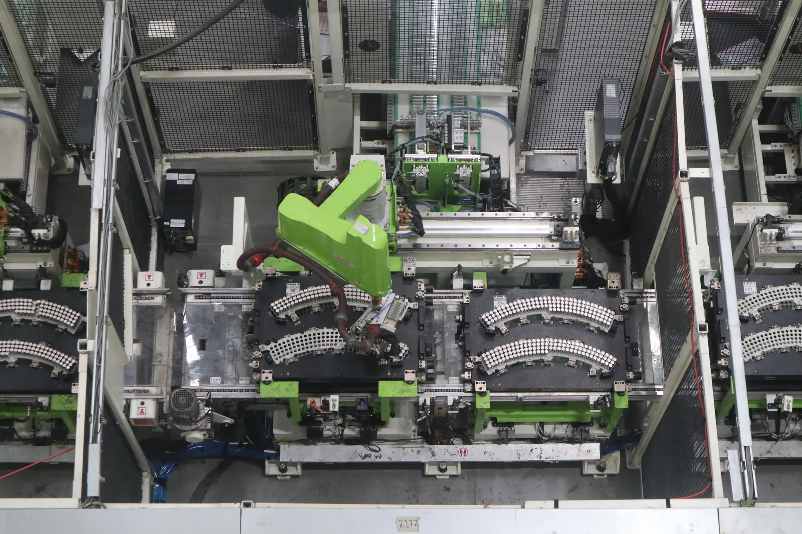

▲ 정부 생산 일치성 검사에서 휠베이스 오차가 지적된 지리 싱위안. '18개월 신차'로 대표되는 중국차 속도전의 이면이 드러났다
1. "3~5년 걸리던 신차, 이제 18개월"… 중국차의 속도 경쟁력
글로벌 완성차 업체가 신차 하나를 내놓는 데 통상 3~5년이 걸리는 것과 달리, 중국 자동차 업체들은 평균 2년, 빠르면 18개월 만에 신차를 개발해 시장에 내놓는다. 소비자 취향 변화와 전기차 기술 발전 속도에 민첩하게 대응할 수 있다는 점에서, 이 '속도'는 그동안 중국차의 핵심 경쟁력으로 꼽혀왔다. 일부 업체는 여기에 AI를 접목해 개발 기간을 더 단축하는 방안까지 논의해온 것으로 알려졌다.
문제는 이 속도전이 개발·검증 과정을 얼마나 촘촘히 거치고 있느냐다. 생산능력 과잉과 극심한 가격 경쟁이 겹친 중국 내수 시장에서, 신차 출시 속도를 늦추는 것은 곧 점유율 하락으로 이어질 수 있다는 압박이 업체들을 짓눌러왔다는 것이 업계의 대체적인 시각이다.

▲ 지리 싱위안. 정부 검사에서 표본 차량의 실제 휠베이스가 신고 수치 대비 허용오차 1%를 초과한 것으로 확인됐다 ⓒ Wikimedia Commons
2. 지리 싱위안·BYD 친 L DM-i, 정부 검사서 나란히 적발
중국 공업정보화부(MIIT)가 실시한 신에너지차 생산 일치성 검사에서 총 7개 차종에서 문제가 확인됐는데, 그중 지리 '싱위안'과 BYD '친 L DM-i'가 대표 사례로 지목됐다. 싱위안은 표본 차량의 실제 휠베이스가 정부에 신고한 수치와 허용오차 1%를 넘어서는 차이를 보였고, 친 L DM-i는 배터리 충전량을 일정 수준으로 유지한 상태(CS 모드)에서 측정한 연료소비량이 신고 수치를 초과한 것으로 나타났다. 이밖에 사용자 설명서 누락, 비상용 창문 기준 미흡, 측면 충돌 보호 장치 기준 미달 사례도 함께 적발됐다.
| 업체·차종 | 적발 내용 |
|---|---|
| 지리 싱위안 | 실제 휠베이스가 신고 수치 대비 허용오차 1% 초과 |
| BYD 친 L DM-i | CS 모드 연료소비량이 신고 수치 초과 |
| 기타 5개 차종 | 사용자 설명서 누락, 비상용 창문·측면 충돌 보호 기준 미달 등 |
▲ BYD 친 L DM-i. CS 모드 연료소비량이 정부 신고 수치를 초과한 것으로 확인돼 생산 일치성 검사 대표 사례로 꼽혔다 ⓒ Wikimedia Commons
3. 4개 부처 합동, 1년짜리 '품질 향상 특별조치'
중국 공업정보화부·공안부·생태환경부·국가시장감독관리총국 등 4개 부처는 지난달 27일부터 1년간 "도로 자동차 제품 생산 일치성 및 품질 향상 특별조치"에 착수했다. 전기차 의무 내구 시험거리를 기존 1만 5,000km에서 3만km으로 확대하는 방안도 함께 거론되고 있다. 중국 정부는 이번 조치의 취지를 "신에너지차 산업의 경쟁 질서를 정상화하고 제품의 생산 일치성과 품질 및 안전의 최저선을 지키겠다"고 설명했다.
📍 생산 일치성 검사란
생산 일치성(Conformity of Production) 검사는 양산 차량이 정부에 인증받은 제원·성능 그대로 만들어지고 있는지를 확인하는 절차다. 신고한 수치와 실제 양산차 사이에 오차가 크면, 소비자가 구매 당시 안내받은 성능·안전 기준과 실제 차량이 다를 수 있다는 뜻이 된다. 이번에 지적된 휠베이스·연료소비량 오차는 수치상으로는 작아 보이지만, 인증 제도 자체의 신뢰도와 직결되는 문제로 받아들여진다.
4. 국내용 넘어 수출용 기준까지… "품질=신뢰"로 무게중심 이동
규제 강화는 내수 시장에만 머물지 않는다. 상무부·공업정보화부·시장감독관리총국은 지난 1일 "자동차 산업 해외 경쟁행위 및 컴플라이언스 구축 지침"을 별도로 발표하고, 해외로 수출되는 중국산 자동차에 대해서도 품질관리·생산안전·데이터 보안·현지 법규 준수를 요구하기로 했다. 중국차의 해외 판매 비중이 갈수록 커지는 상황에서, 가격 경쟁력만으로는 해외 소비자의 신뢰를 얻기 어렵다는 위기의식이 반영된 조치로 풀이된다.
자동차 제조사들은 올해 말까지 제품 품질·신뢰성·내구성에 대한 자체 보고서를 지방 당국에 제출해야 하며, 결함이 발견될 경우 자발적 리콜도 함께 실시해야 한다. 관련 소식은 오토헤럴드 원문 기사에서 확인할 수 있다. 바로가기

▲ 전기차 배터리 생산라인(자료사진). 짧아진 개발주기만큼 생산·검증 공정의 신뢰성이 새로운 쟁점으로 떠올랐다 ⓒ Wikimedia Commons
5. '속도'에서 '신뢰'로 — 다음 라운드의 경쟁력
이번 사태를 바라보는 업계의 시각은 크게 두 갈래다. 한쪽에서는 정부의 개입이 지나치게 늦었다는 지적이 나온다. 이미 수십 개 브랜드가 초단기 개발 경쟁을 벌여온 상황에서, 뒤늦은 규제가 얼마나 실효성을 가질지 의문이라는 것이다. 다른 한쪽에서는 오히려 지금이 적기라는 평가도 있다. 내수 시장의 극심한 가격 경쟁이 한계에 다다른 시점에서, 품질과 신뢰를 축으로 한 새로운 경쟁 질서가 자리잡을 수 있는 계기가 될 수 있다는 것이다.
분명한 것은, 중국차가 그동안 앞세워온 '빠른 신차'라는 무기가 이제 '검증된 신차'라는 조건 없이는 통하지 않게 됐다는 점이다. 국내에서도 BYD를 비롯한 중국 브랜드의 전시장이 빠르게 늘어나고 있는 만큼, 이번 품질관리 강화가 실제 제품 신뢰도 향상으로 이어질지 지켜볼 필요가 있다.
✅ 中 '18개월 신차' 속도전과 품질 논란, 이것만은 확인하세요
· 중국차 신차 개발기간 평균 2년, 일부 18개월까지 단축
· 지리 싱위안(휠베이스 오차)·BYD 친 L DM-i(연료소비량 초과) 등 7개 차종 생산 일치성 검사서 적발
· 4개 부처 합동 '품질 향상 특별조치' 지난달 27일부터 1년간 시행
· 전기차 의무 내구시험 거리 1만5000km→3만km 확대 검토
· 해외 수출용 자동차에도 별도 컴플라이언스 지침 신설(9월 1일)
6. 정리
중국 자동차 업계의 '18개월 신차'라는 속도 경쟁력은 그동안 시장 대응력의 상징이었지만, 지리 싱위안과 BYD 친 L DM-i의 생산 일치성 문제로 그 이면이 드러났다. 중국 정부는 4개 부처 합동 특별조치와 해외 수출용 컴플라이언스 지침까지 동시에 꺼내들며 품질관리 고삐를 죄고 있다. 국내 시장에서도 존재감을 넓혀가는 중국 브랜드인 만큼, 앞으로는 '얼마나 빨리 내놓느냐'보다 '얼마나 믿을 수 있느냐'가 중국차의 새로운 경쟁 기준이 될 전망이다.